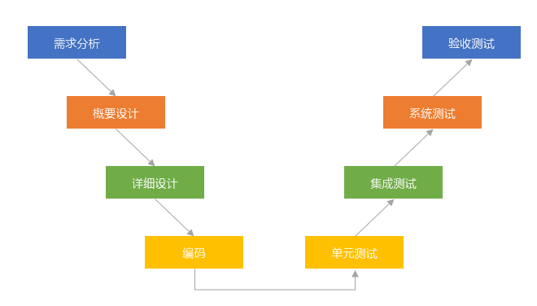

- 知识点 Points
瀑布模型
- 需求明确
- 风险控制弱
- 开发完才测试
v模型
- 与测试结合：每个阶段都有测试
-
 V模型
原型模型
- 也叫演化模型
- 原型方法；需求不明确；经常变化
增量模型
- 第一个增量是核心
- 增量不稳定会增加成本
螺旋模型
- 大型、复杂、风险
- 瀑布模型和原型模型结合
喷泉模型
- 自底向上
- 面向对象、复用好、开发过程无间隙、节省时间
- 使用用例图
RUP统一过程模型
- 大型项目、时间周期长，构件化开发
- 以架构为中心，以用例图为驱动
- 过程：初始→细化→构建→交付
快速模型
- 敏捷开发
演化|迭代模型
- 快速开发；尽快开发；慢慢改善